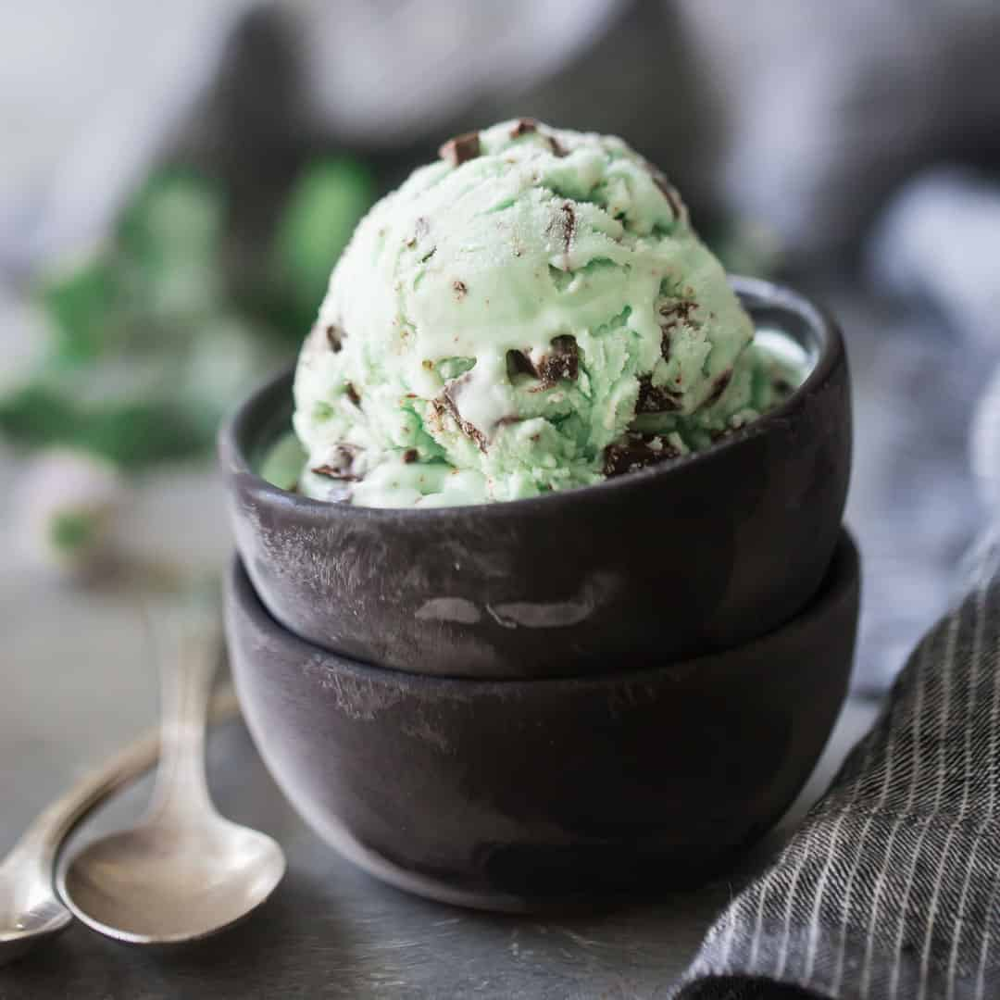
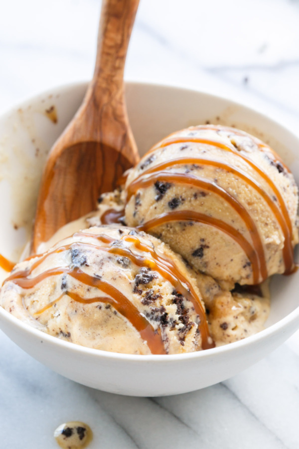
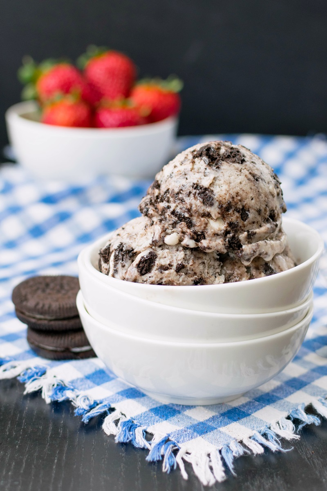

Favorite Ice Cream Flavors
Mint
Mint is the most refreshing flavor out of all the ice cream. Some might say it tastes like toothpaste, however mint includes chocolate and taste sweet. Saying it taste like toothpaste is obvious because toothpaste uses mint in order create a refeshing taste.
Nutrition Facts
| Flavor | Mint Ice Cream |
|---|---|
| Calories | 160 Calories |
| Carbohydrates | 27 grams |
| Fats | 4g |
| Protein | 0 gram |
How It's Made
Ingredients
- Heavy whipping cream
- Sweetened condensed milk
- Peppermint extract
- Salt
- Chocolate bits
- Green food coloring
Instructions:
- Take out all ingredients listed.
- Start by whipping the cream until it can hold stiff peaks.
- Add in the sweetened condensed milk, peppermint extract, green color (if using), and a pinch of salt to balance the sweetness.
- Fold everything together until it’s well combined, and add the chocolate chips.
- Once the chocolate has been folded in, transfer the mixture to a freezer-friendly container and pop it in the freezer.
- It will take around 2 hours to fully freeze to a hard, scoop-able consistency.
Caramel Cookie Crunch
Caramel Cookie Crunch is one of those unique flavors that you can never get bored of. You get the taste of a vanilla ice cream base, chocolate cookie mixed in, with swirls of caramel. This ice cream always guarantee’s that every bite is packed with flavor. His flavor was originally created by the brand Talenti. Below I have simplifies the instructions for those who are lazy!
Nutrition Facts
| Flavor | Caramel Cookie Crunch |
|---|---|
| Calories | 210 Calories |
| Carbohydrates | 17 grams |
| Fats | 10g |
| Protein | 4 gram |
How It's Made
Ingredients
- 2 cup of heavy whipping cream
- 2 cups of half-and-half cream
- 1 cup of sugar
- 2 teaspoons of vanilla extract
- Any brand of caramel sauce
- Any brand of chocolate cookie (crushed into big pieces)
Instructions:
- Combine the heavy cream, half-and-half, sugar, and vanilla extract.
- Stir ingredients until the sugar is completely dissolved.
- Pour the mixture into a container you will want to store the ice cream. Then place into freezer
- After 3 hours take the mixture out and add your desired amount of cookies and caramel, then swirl.
- Place mixture back in the freezer and continue to check on it every 3 hours until you are satified with your result.
Cookies and Cream

Cookies and cream flavored ice cream is one flavor that you need to try making yourselves at home! Cookies and cream flavored ice cream is like your bread and butter ever since dairy plant manager Shirley Seas and dairy science students Joe Leedom and Joe Van Treeck invented the flavor at the South Dakota State University dairy plant after putting crushed Oreo cookies into vanilla ice cream in 1979.
Everyone needs to have this flavor of ice cream in their occasional cheat day dietary plans.
You can find a stock of cookies and ice cream in your local grocery stores but there is nothing better than creating the ice cream yourself!Below are instructions on how to make your own cookies and cream flavored ice cream at home! You can tailor your ingredients depending on your caloric intake and dietary needs. This tutorial makes it easier for you to create a somewhat healthy ice cream!
Nutrition Facts
| Flavor | Cookies and Cream |
|---|---|
| Calories | 150 Calories |
| Carbohydrates | 28 grams |
| Fats | 8g |
| Protein | 3 gram |
How It's Made
Ingredients
- 3 cups Ripple Unsweetened Dairy-free Pea Milk Beverage (original or vanilla)
- ⅔ to ¾ cup sugar
- ½ cup non-GMO canola oil or other neutral-tasting oil
- 2 teaspoons pure vanilla flavoring or paste
- 1/16 teaspoon salt
- ¼ teaspoon xanthan gum (corn-free is available)
- 20 chocolate sandwich cream cookies, chopped into pieces (buy one in your local grocery store)
Instructions:
- Pour about half of the milk beverage into your blender and add the sugar. Blend for 1 minute, or until the sugar dissolves.
- With the motor running, slowly drizzle in the oil through the lid opening (keep your hand around the opening as it might splatter!). Continue to blend for 1 minute.
- Add the rest of the milk beverage, vanilla, and salt, and blend for 15 seconds.
- Add the xanthan gum and blend for 1 minute.
- Place the blender jar in your refrigerator and refrigerate for 2 hours or longer.
- Give the mixture a quick 10 second blend.
- Process the mixture in your ice cream maker according to the manufacturer's directions.
- Once the churning is complete, stir in the chopped cookies.
- Pack the ice cream into a freezer-safe container, and freeze for 2 hours for soft set, or 4 or more hours for firm.